Londres–Barcelona (recorrido potencial)
La gran salida
Londres · itinerario potencial (no programado)
Este mapa conserva un concepto alternativo que no se recorrerá como edición principal. Sigue siendo inspiración — y la huella de la escala del desafío que queremos asumir por los niños a los que apoyamos.
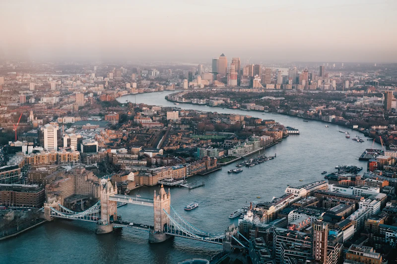
Foto de Benjamin Davies en Unsplash
Londres → Southampton
130 km
Primer día por las carreteras del sur de Inglaterra, hasta el puerto de Southampton — puerta de entrada al continente.
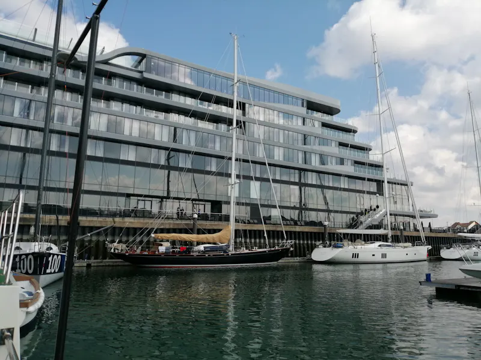
Foto de Hasan Karaman en Unsplash
Le Havre → Rouen
90 km
Llegada a Normandía: una etapa costera y luego fluvial hacia Rouen y su catedral.
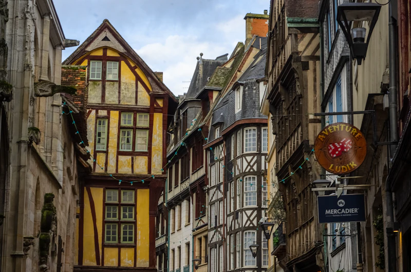
Foto de Barry Talley en Unsplash
Rouen → París
135 km
Subida hacia la capital: el Sena como hilo conductor hasta París.
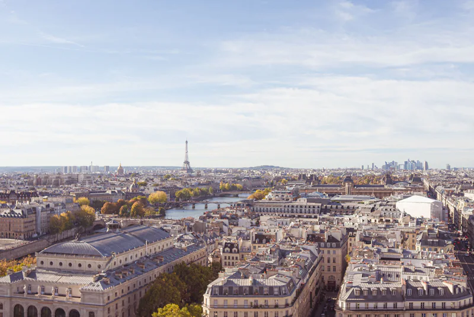
Foto de Dimitri Iakymuk en Unsplash
París → Orléans
130 km
Hacia el Valle del Loira: un día largo para llegar a Orléans.
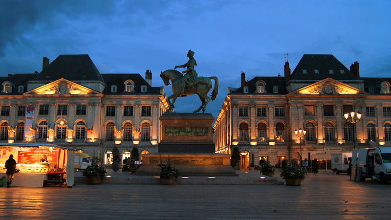
Foto de Andre Chipurenko en Unsplash
Descanso en Orléans
Día de recuperación
Una pausa merecida para recargar fuerzas antes de afrontar el centro de Francia.
Foto de Andre Chipurenko en Unsplash
Orléans → Châteauroux
150 km
Hacia el Berry: una etapa larga en el corazón de Francia.
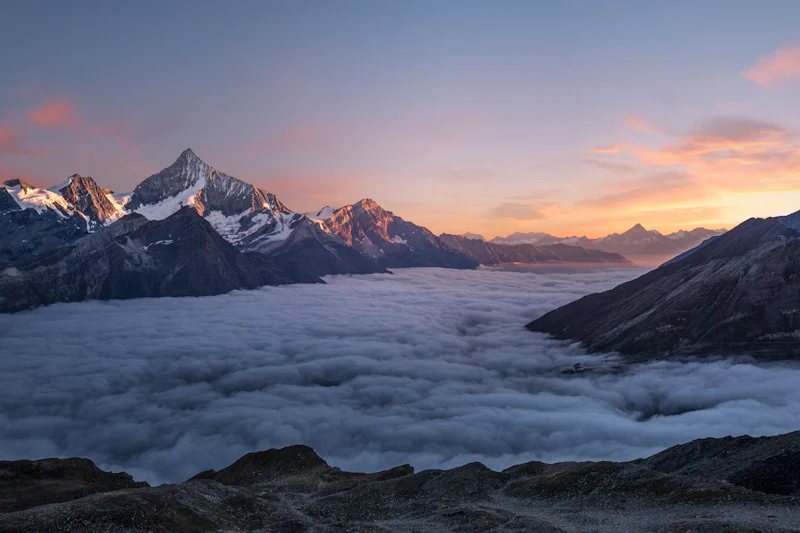
Foto en Unsplash
Châteauroux → Limoges
140 km
Hacia el Lemosín y su relieve, paso a paso hacia el sur.
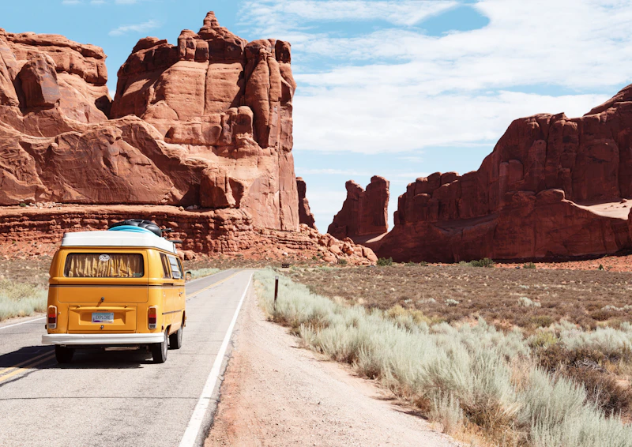
Foto en Unsplash
Limoges → Brive
100 km
Un día más corto para encadenar hacia Brive-la-Gaillarde.
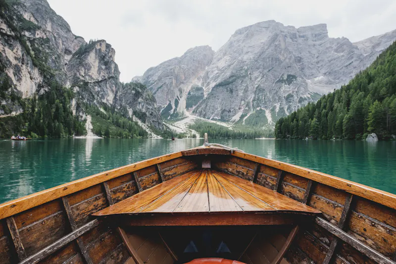
Foto en Unsplash
Brive → Toulouse
220 km
El día más largo: inmersión hacia la Ciudad Rosa y el suroeste.
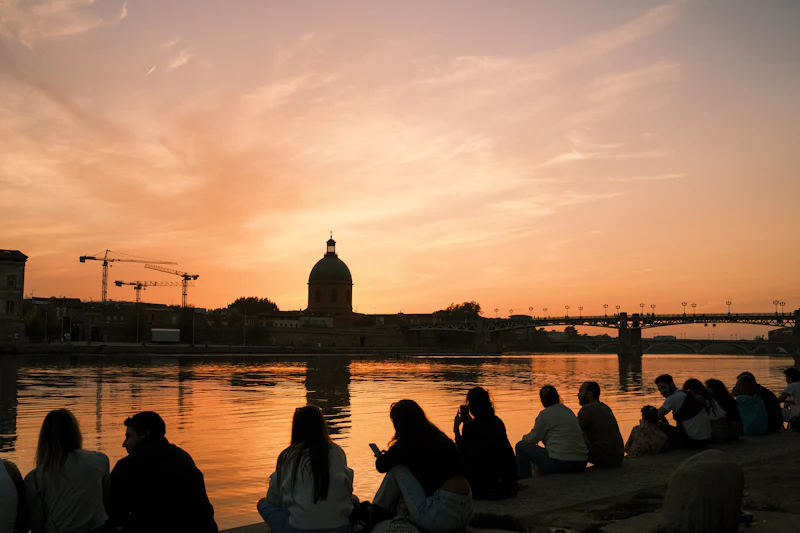
Descanso en Toulouse
Día de recuperación
Segundo y último día de descanso — tiempo para disfrutar del suroeste antes del tramo final.
Toulouse → Carcassonne
100 km
Por el Canal du Midi hacia la ciudad medieval de Carcassonne.
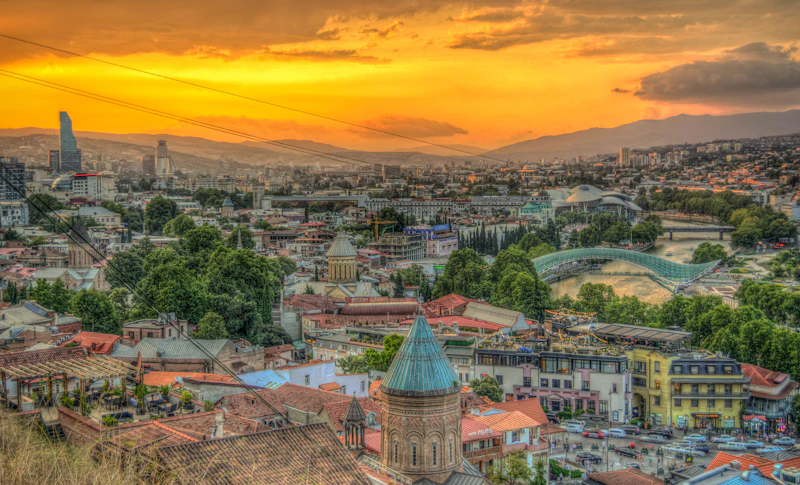
Foto en Unsplash
Carcassonne → Perpignan
100 km
Hacia el Mediterráneo y Perpiñán — la última etapa francesa.
Foto en Unsplash
Perpiñán → Gerona
115 km
Entrada en Cataluña: las carreteras se tensan hacia Gerona.
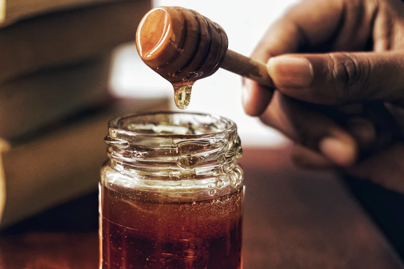
Foto en Unsplash
Gerona → Barcelona
105 km
Llegada a Barcelona: el último pedalazo de un concepto que forjó la ambición del proyecto.
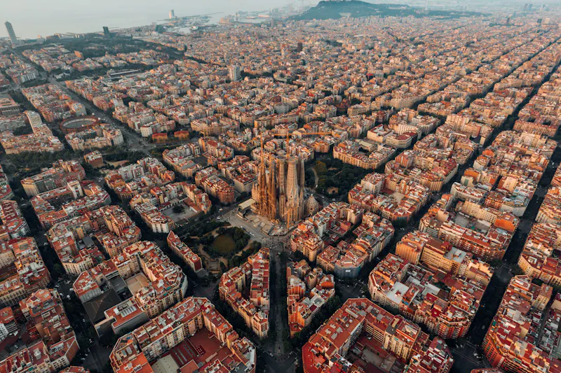
Foto en Unsplash